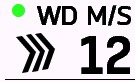
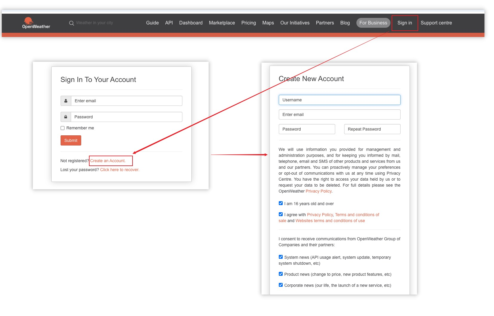
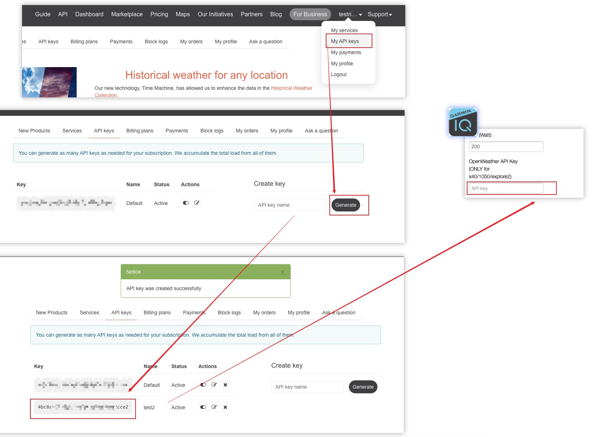

Weather Configuration¶
This section explains how to configure weather settings in the ConnectIQ app to display correct data in the wind module.
Device Compatibility¶
The wind module's data source has 3 states: Internet updated, using Garmin's built-in weather information, and no data. Due to different support for different APIs in new and old devices (this is a limitation from Garmin), different devices can support some or all of the modes. For older devices, even after updating the OpenWeather API as described below, weather data still won't be displayed correctly. See the table below for support details.
| Icon | Meaning | Update Frequency | Location Precision | Supported Devices |
|---|---|---|---|---|
| 🟢 | Successfully updated through OpenWeather | Every minute | Weather information at current latitude and longitude | 540 / 840 / 1040 / 1050 / explore2 |
| ⭕ | OpenWeather update failed, using Garmin built-in weather data | Uncertain, determined by Garmin | Weather information from nearest airport or weather station | 530 / 830 / 1030 and newer models |
| 🔴 | Unable to obtain any data | - | - | 520 Plus / 820 / explore and newer models |
Examples of update status icons:

OpenWeather API Registration and Acquisition¶
- Visit the OpenWeather official website OpenWeather Map
- Register a personal account (not For Business) and complete login
 - Go to the My API Keys page, click the Generate button to generate an API Key
- Copy the API Key and paste it into the OpenWeather API Key input box in the MyGahoo setting page (in ConnectIQ app)
 - Click the Save button to save the settings